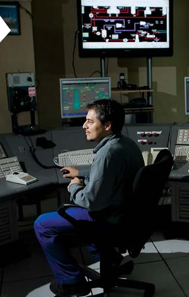

-
"El estudio de una carrera como ingeniería te ayuda a tener un enfoque de análisis de resolución de problemas, te permite tomar decisiones basadas en un sustento técnico y te ayuda a entender y priorizar el trabajo diario."
-Ignacio L. Pelizzari.
- 
Ingeniero Electricista."Mi nombre es Ignacio Pelizzari, tengo 36 años y soy ingeniero electricista. Elegí esta carrera, que estudié en la UTN, porque preferí empezar por una ingeniería específica y hacer después un máster generalista, de Dirección de Empresas, en la Universidad del Salvador.
En la Argentina hay pocos ingenieros, mucho menos electricistas, y el ámbito de aplicación es muy amplio porque podés trabajar en proyectos específicos de infraestructura eléctrica como en cualquier otro proyecto multidisciplinario.
Yo trabajo como gerente de Proyecto en la Dirección de Ingeniería gestionando proyectos de inversión con la participación de muchas disciplinas (mecánica, eléctrica, electrónica, química). Tengo una oficina en la Torre YPF Puerto Madero, que es un lugar muy agradable, pero además viajo frecuentemente a las refinerías de La Plata y Luján de Cuyo porque es muy importante poder visitar las obras que realizamos.
El estudio de una carrera como ingeniería te ayuda a tener un enfoque de análisis de resolución de problemas, te permite tomar decisiones basadas en un sustento técnico y te ayuda a entender y priorizar el trabajo diario."
-Ignacio L. Pelizzari.
-
Ingeniero Electricista.